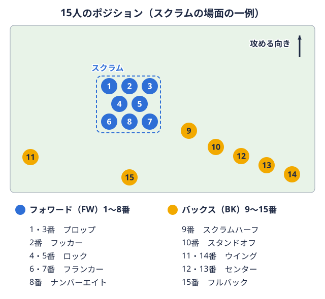
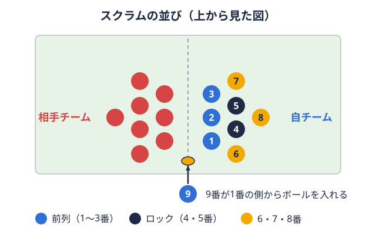
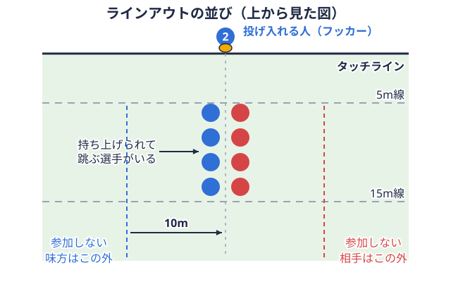
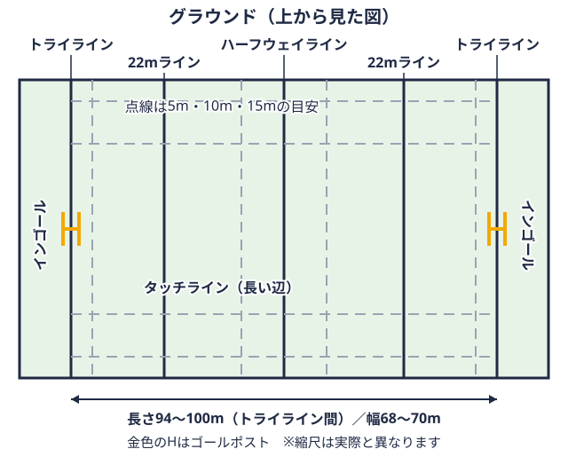
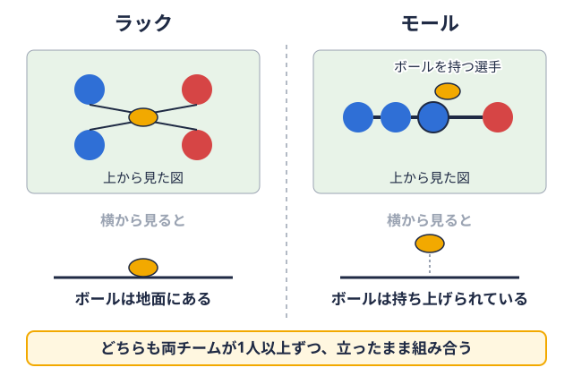
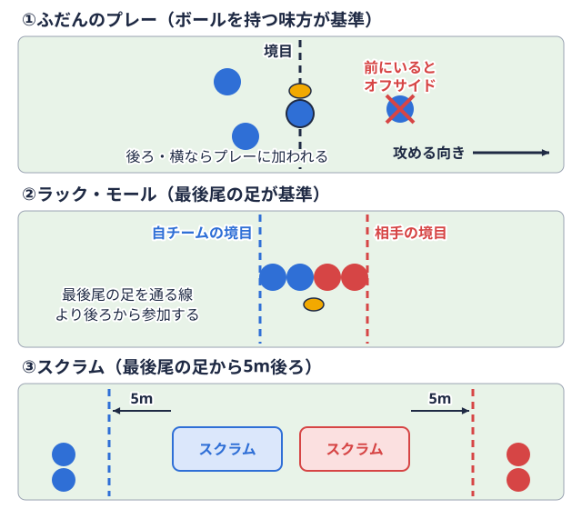

ポジション別 2026-10-13
ラグビーのフルバックの役割｜15番の守備・キック・攻撃参加と練習の組み立て
フルバック15番のポジション。最後方で守りの最後の砦となり、相手のキックを処理して攻め返す。   
この記事では、World Rugby（ワールドラグビー）のコーチング資料（Passport）にある機能的役割分析（Full back）、競技規則、RugbyPassやRugby Worldの解説をもとに、フルバックの役割、キックとキャッチで確認したいルール、練習の組み立て方を整理します。ここで紹介する内容は一般的に紹介されている考え方であり、所属チームの監督・コーチの指導方針が優先される点はあらかじめご了承ください。
フルバックの役割をおさえる
最後尾に立つ「最後の守り手」
フルバックの背番号は15番で、陣形の最後尾に位置します。RugbyPassのポジション解説（Sam Smith氏、2022年8月22日公開）では、フルバックは守備ラインの後ろで構える「スイーパー（掃除役）」のような存在として、相手のキックを捕ることと、ラインを破られたあとに最後のタックルボールを持つ相手をつかんで地面に倒すプレー。倒したあとは、すぐにボールから離れなければならない。用語辞典で見るをすることが主な責任として紹介されています。Rugby Worldの解説でも、位置取りの感覚、確実なキャッチ、信頼できるキック、そして攻撃での走力が求められるポジションとして挙げられています。
World Rugby Passportの機能的役割分析（Full back）は、フルバックに求められる働きを、パス、キック、オープンプレー（セットプレースクラムやラインアウトのように、プレーが止まったあと決まった形で再開する場面。用語辞典で見る以外の場面）の3つに分けて整理しています。以下はその内容を要約したものです。
パスとキックの項目
パスについては、さまざまな距離の素早く正確なパスを左右どちらの方向にも出せることが挙げられています。キックについては、プレッシャーの下で左右どちらの足でも多様なキックを蹴り、陣地を獲得したり、キック後の追走でボールを取り戻したりできることが挙げられています。
ここで注目したいのは、「左右どちらの足でも」という書き方です。実際のチームで両足を使い分けられる選手が多いとは限りませんが、資料が求める理想の姿として覚えておくと、練習の目標を立てやすくなります。
オープンプレーの項目
オープンプレーについては、攻撃と守備に分けて、おおむね次のような項目が並んでいます。
- 攻撃では、ミッドフィールドやバックスリー（両ウイングとフルバック）とうまくつながり、プレーの継続性を保つこと
- 攻撃ラインの立ち位置（幅と深さ）を素早くとること
- スペースを見つけ、味方に伝え、活用すること
- スピードと動きをつけてバックラインに入り、攻撃の選択肢を増やすこと
- 守備では、並び方と戦略について正しい判断を選び、スペースを認識して埋めること
- 正面、横、後ろからのタックルを効果的に行うこと
- 状況や相手に応じて、バックフィールド（自陣後方）をカバーする正しい位置をとること
- ウイングが前に出ているときは、3人のチームとしてバックフィールドをカバーすること
- カウンターアタックでは、両ウイングと3人で連携すること
- 接点（タックル後の攻防が起きる場所）の周辺でサポートすること
- 空中でボールを確実にキャッチすること
つまりフルバックは、「後ろに立っている人」ではなく、守備では最後のライン、攻撃では追加の攻撃者という二つの顔を持つポジションと読めます。ポジション全体の中での位置づけはラグビーのポジション一覧と役割を解説で確認できます。
守備の最後尾で意識したいこと
キャッチと位置取り
Passportの項目に「空中でボールを確実にキャッチすること」とあるように、ハイボールの処理はフルバックの仕事の中心です。ただし、キャッチだけを練習しても試合では機能しません。RugbyPassの解説が位置取りの感覚を重視しているように、相手のキッカーの利き足、風向き、味方の守備ラインの上がり方を見て、どこに立つかを決める部分が土台になります。
ウイングと3人で後方をカバーする、という項目は、役割分担の話でもあります。フルバックが前に出たときに後ろが空き、ウイングが下がるときにサイドが空く、といった関係を、チーム内で言葉にしておく必要があります。
最後のタックル
RugbyPassの解説では、フルバックはラインを破った攻撃者に対する最後のタックルを担うと紹介されています。1対1で止める力だけでなく、味方が追いつく時間を稼ぐ判断も含まれます。タックルの基本フォームと安全な高さはラグビーのタックル練習とコツで扱っています。ここで練習した内容を、長い距離を走って寄る動きと組み合わせる、という順番がよいでしょう。
キックとキャッチで知っておきたい競技規則
フルバックはキックとキャッチを担う場面が多いポジションであり、ルールの理解が判断の質に関わります。以下は World Rugby の競技規則の要約です。大会によって適用されるルールや変更が異なる場合があるため、最新の内容と大会要項は日本ラグビーフットボール協会で確認してください。2026年度の改正の整理はラグビーのルール改正を2026年の日本協会通達で整理にまとめています。
タッチへのキック（第18条）
第18条（Touch, quick throw and lineout）には、キックでボールがタッチに出たときのラインアウトの位置が定められています。要約すると、次のとおりです。
| 条文 | 内容の要約 |
|---|---|
| 18.8d | 自陣22メートルライン各トライラインから22m手前に引かれた線。自陣側のこの線の内側を「22」と呼ぶ。  用語辞典で見る内からのキックについては、22メートル内の状況（タックルやラック地面にあるボールの上で、両チーム1人以上が立ったまま組み合い、ボールを奪い合う状態。手は使えない。 用語辞典で見る、モールボールを持った選手を中心に、両チーム1人以上が立ったまま組み合い、持ち上げたボールを押し合う状態。用語辞典で見るの有無、ボールを22メートル内に運び入れた経緯など）によって位置が変わる規定がある |
| 18.8e | 22メートルラインの外から蹴って直接タッチに出した場合、ボールがタッチライングラウンドの長い辺に引かれた線。ボールや選手がこの線の外に出ると、プレーが止まる。用語辞典で見るに達した地点か、蹴った地点の真横のタッチライン上のうち、蹴った側のトライラインに近いほうが位置になる（陣地を得られない） |
| 18.8a | 自陣から蹴ったボールが、相手の22メートル内で一度地面に着いてからタッチに出た場合、蹴った側のチームがスローインを行う（いわゆる「50:22」） |
条文の細かい条件はここでは省略しています。直接タッチに出すか、バウンドさせてからタッチに出すかで結果が変わるため、自分が蹴る場所とその条件を、監督やコーチと確認しておくことをおすすめします。
キック後の追走とオフサイド（第10条）
第10条（Offside and onside in open play）では、味方が蹴ったボールに対し、キッカーより前にいる選手はオフサイドボールを持つ、または最後に触れた味方より前にいる状態でプレーに加わる反則。 
フルバックの観点では、自分がキックしたあとに味方が前にいる状態を整理しておくこと、相手のキックを捕る場面では、相手の追走者がどこまで来ているかを確認すること、が大切になります。
危険なプレー（第9条）
第9条9.11には、他の選手に対して無謀または危険なことをしてはならない、という規定があります。要約では、肘や前腕を突き出すことや、タックラーの上や中に飛び込むことが例として挙げられています。ハイボールの競り合いでは、空中にいる相手との接触が起きやすいため、危険なプレーに当たる動きを避ける意識が必要です。
練習の組み立て方
以下は、編集部が上記の資料の考え方を参考に組み立てた例であり、特定のチームの実践例ではありません。チームの練習日程や体の状態に合わせて調整してください。
優先順位の考え方
最初に固めたい項目を、Passportの項目と対応させて整理します。
- キャッチ（空中でボールを確実にキャッチすること）: 最初は止まった状態で、次に助走をつけて、最後に周りに人がいる状態で行います。
- キック（左右どちらの足でも）: まず利き足で距離と方向を安定させ、そのあと逆足の練習を少量ずつ加えます。蹴りたい場面（タッチに出す、前に蹴って追う、裏のスペースを狙う）を分けて練習します。
- 位置取り（バックフィールドのカバー）: ウイングと3人で、味方の守備ラインの上がり方に合わせて立つ位置を確認します。
- バックラインへの入り方（攻撃参加）: スピードをつけて入るタイミングを、パスの受け手と合わせて練習します。
- タックル: ラグビーのタックル練習とコツの段階的な練習のあと、距離を走ってから寄る動きを加えます。
1週間の回し方の例
- キックとキャッチの日: 蹴る本数と捕る本数をそろえ、疲労がたまったときの精度も確認します。
- バックスリーの連携の日: ウイングと立ち位置、声かけ、役割の入れ替えを確認します。
- 攻撃参加の日: スタンドオフやセンターとのパスの距離とタイミングを、ラグビーのスタンドオフ 判断力の鍛え方の考え方も参考に確認します。
- 判断の日: 蹴る、運ぶ、パスするの選択を、制限付きの試合形式で確認します。
- 試合想定の日: 疲労のある状態で、キャッチ・キック・攻撃参加の連続動作を行います。
記録のつけ方
練習ノートには、キャッチの成否だけでなく、「どの条件（風、キックの種類、味方の位置）で落としたか」を書いておくと、傾向を振り返りやすくなります。数字は他の選手と比べるためではなく、自分の課題を知るために使うのがよいでしょう。
パスの基本はラグビーのスクラムハーフ パス練習にも共通する部分があります。ポジションは違っても、正確さの土台は同じです。
体づくりとケガの予防
フルバックは、全力で走る距離、ジャンプ、タックルのそれぞれが求められます。RugbyPassの解説には、エリートレベルのフルバックの目安として、スクワットで体重の1.6倍、3kmを約3分15秒で走るという数値が紹介されていますが、体格や役割によって異なる旨も記載されています。大学生の目標値として当てはめるものではなく、トレーニングの方向性を考える参考にとどめてください。
筋トレの考え方はラグビーのオフシーズン筋トレメニューに、増量や食事はラグビーの食事・増量メニューにまとめています。頭を打った場合の対応はラグビーの脳震盪対応と段階的競技復帰で、ハイボールでの接触に備える意味でも確認しておくとよいでしょう。痛みや違和感がある場合は練習量を減らし、トレーナーや医療機関に相談してください。
所属リーグ・対戦相手を確認して試合の準備に活かす
フルバックにとって、相手チームのキックの傾向を知ることは準備の一つです。まず自分たちの所属リーグと対戦相手の位置づけを確認しておくと、見通しが立ちやすくなります。関東大学対抗戦関東の大学ラグビーの大会区分の一つ。Aグループ・Bグループに分かれて戦う。用語辞典で見るAグループの大学は大学一覧から、順位は順位表から確認できます。リーグ戦関東の大学ラグビーのもう一つの大会区分。1部・2部など「部」に分かれて戦う。用語辞典で見る1部はリーグ戦1部の順位表、関西Aリーグは関西Aリーグの順位表、九州は九州Aリーグの順位表で確認できます。
試合を見るときは、背番号15の選手が相手のキックをどこで待ち、捕ったあとにどう判断しているかを観察してみてください。観戦の入り口は大学ラグビーの観戦ガイドに、用語に迷ったときはラグビー用語集（初心者向け）にまとめています。
まとめ
フルバックは、守備の最後尾としてキックを処理し、最後のタックルを担い、攻撃ではバックラインに加わって選択肢を増やすポジションです。World Rugby Passportの機能的役割分析では、パス、キック、オープンプレーの3つが整理されており、キャッチ、キック、位置取りを土台に練習を組み立てることができます。ルールでは、タッチへのキック（第18条）、キック後のオフサイド（第10条）、危険なプレー（第9条）が特に関わります。規則は改正されることがあるため、日本協会の最新の競技規則と大会要項の確認を習慣にしましょう。
出典
この部活・競技を応援したい方へ
取材してほしい部活を募集中
オフシーズン・引退後に、長期インターンという選択
部活で培った力を実務で試す。16タイプ診断（30秒）で合う企業がわかります。